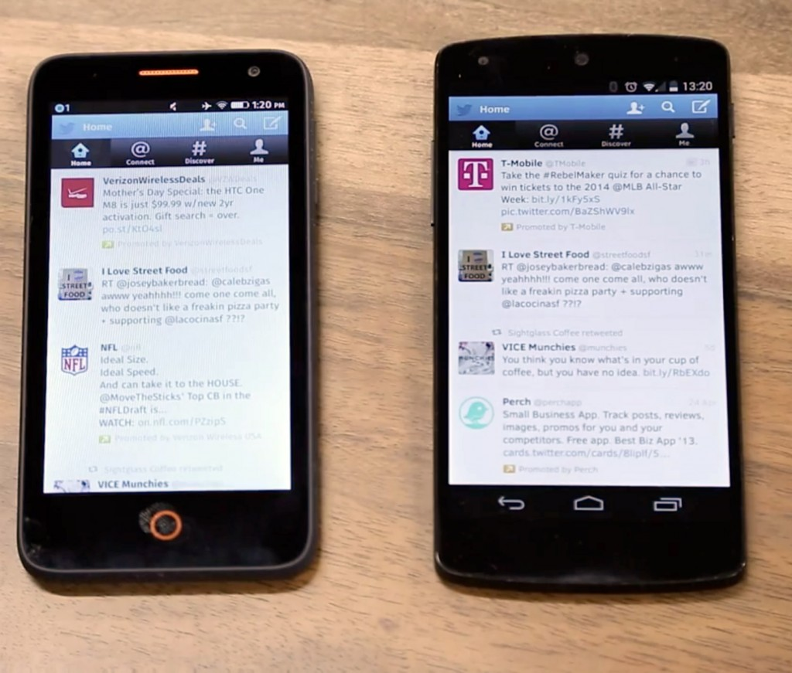
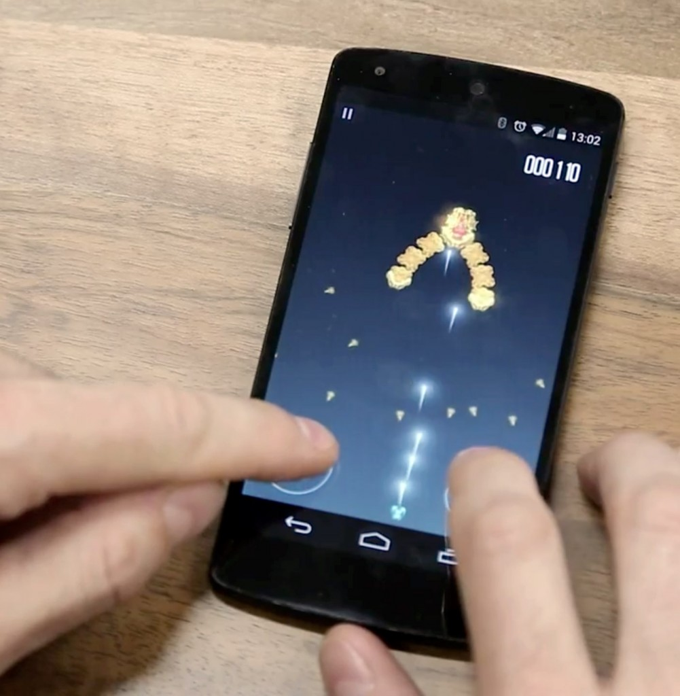

Mozilla 相信「App」與「網頁瀏覽」彼此應該共生且相輔相成。我們正透過許多開發者已熟悉的 Web 技術而建構 App 生態系統，藉以強化此兩者之間的關係。
Mozilla 將 Firefox OS 定位為行動作業系統，並讓 Web 與 Open Web App 成為行動經驗的核心。我們努力拉近 Web 與原生 App 之間的效能差異，後續效應正不斷發酵，另透過 WebAPI 期望 Web 也能妥善利用裝置功能，更讓 Web 首次能替代原生平台而成為 App 開發平台。
撰寫 Open Web App 並直接在 Android 上執行

Mozilla 現已透過 Firefox for Android 29，將開放的 Open Web App 生態系統延伸至 Android 之上。過去幾個月以來，我們努力為 Open Web App 開發「原生經驗」。使用者現在可透過自己熟悉的原生 App 方式，同樣管理自己的 Web App。只要安裝/更新/移除 App，該 App 都會出現在「App 選單 (App Drawer)」與「近期 App (Recent Apps)」清單中。

如果你是開發者，現在就能針對 Firefox OS 裝置寫出自己的 Open Web App，而且不需改動任何一行程式碼，就能讓數百萬名的 Firefox for Android 使用者看到你的 App。
觀看影片以了解 Open Web App 在 Android 裝置上運作的方式：
當然，如果你安裝了 Firefox for Android 並實際測試 App 就更好了，也可打造 App 並提交到 Marketplace 之上。
我們另外建議大家可參閱《Testing Your Native Android App》一文。